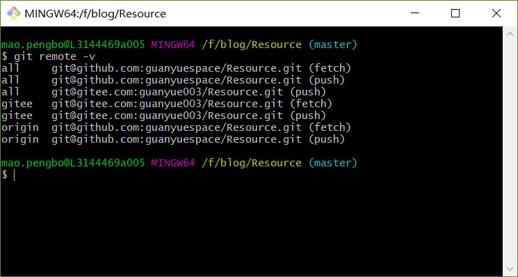
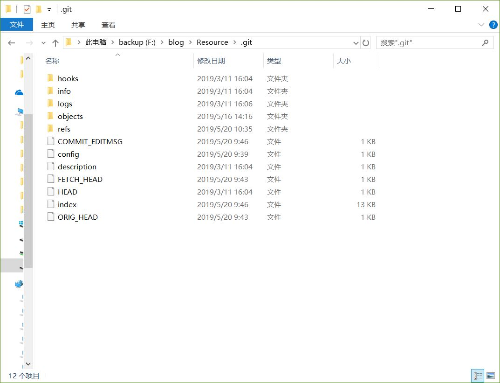
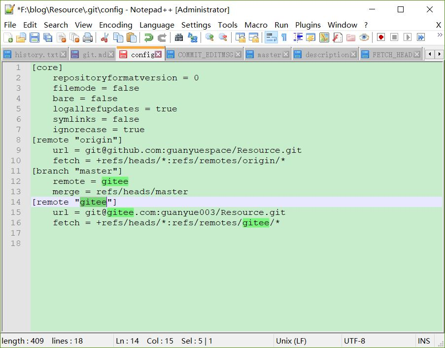

git使用
git help pull
ssh-copy-id -i id_rsa.pub maopengbo@10.8.9.3
create a new repository
1 | git init |
commit
1 | git commit --amend --author='guanyuespace <guanyue003@gmail.com>' |
push an existing repository from the command line
1 | git remote add origin git@github.com:guanyuespace/OK.git |
multi remote
1 | .git/config |

可以看到同时push到两个远程仓库，只从github拉取,ok…. …
.git文件结构

| 文件 | desp |
|---|---|
| logs | commit日志，push-pull信息 |
| objects | 存储的文件二进制对象 |
| COMMIT_EDITMSG | recent commit-msg |
| config | branch, remote-branch |
| index | 暂存区,二进制文件，stage |

参考：.git文件夹
git忽略规则
1 | #此为注释 – 内容被 Git 忽略 |
.gitignore规则不生效的解决办法
把某些目录或文件加入忽略规则，按照上述方法定义后发现并未生效，原因是.gitignore只能忽略那些原来没有被追踪的文件，如果某些文件已经被纳入了版本管理中，则修改.gitignore是无效的。那么解决方法就是先把本地缓存删除（改变成未被追踪状态），然后再提交：
1 | git rm -r --cached . |
Git基础
简要
git help command: git help config
1 | git init |
打标签
记录某一时刻的版本，与git commit之间…
新建标签
Git 使用的标签有两种类型：轻量级的（lightweight）和含附注的（annotated）。
轻量级标签就像是个不会变化的分支，实际上它就是个指向特定提交对象的引用。
含附注标签，实际上是存储在仓库中的一个独立对象， 它有自身的校验和信息，包含着标签的名字，电子邮件地址和日期，以及标签说明.
标签本身也允许使用 GNU Privacy Guard (GPG) 来签署或验证。
一般我们都建议使用含附注型的标签，以便保留相关信息；当然，如果只是临时性加注标签，或者不需要旁注额外信息，用轻量级标签也没问题。
含附注的标签
创建一个含附注类型的标签非常简单，用 -a （译注：取 annotated 的首字母）指定标签名字即可：
1 | git tag -a v0.0.9 -m 'test version v0.0.9' |
轻量级标签
轻量级标签实际上就是一个保存着对应提交对象的校验和信息的文件。要创建这样的标签，一个 -a，-s 或 -m 选项都不用，直接给出标签名字即可：$ git tag v1.4-lw
分享标签
默认情况下，git push 并不会把标签传送到远端服务器上，只有通过显式命令才能分享标签到远端仓库。其命令格式如同推送分支，运行 git push [remote-name] [tagname],或者一次推送所有标签git push [remote-name] --tags
GPG
1 |
|
加解密
1 | $ gpg --recipient E031D280CA50F902CB68A8BBF1C6C99D6C9E65C0 --output result.txt --encrypt src.txt |
签名及验证
1 | $ gpg --sign src.txt # 对src.txt生成二进制签名 文件：src.txt.gpg |
如果想生成单独的签名文件，与文件内容分开存放，可以使用 detach-sign 参数。gpg --detach-sign demo.txt
运行上面的命令后，当前目录下生成一个单独的签名文件 demo.txt.sig。该文件是二进制形式的，如果想采用 ASCII 码形式，要加上 armor 参数。gpg --armor --detach-sign demo.txt
1 | $ cat src.txt |
远程仓库
1 | git remote # 显示**远程仓库** shortname |
撤销操作
减少非必要，无关提交
减少提交次数
1 | git commit --amend |
如果刚才提交时忘了暂存某些修改，可以先补上暂存操作，然后再运行 –amend 提交：
1 | $ git commit -m 'initial commit' |
上面的三条命令最终只是产生一个提交，第二个提交命令修正了第一个的提交内容。
取消暂存
接下来的两个小节将演示如何取消暂存区域中的文件，以及如何取消工作目录中已修改的文件。不用担心，查看文件状态的时候就提示了该如何撤消，所以不需要死记硬背。来看下面的例子，有两个修改过的文件，我们想要分开提交，但不小心用 git add . 全加到了暂存区域。该如何撤消暂存其中的一个文件呢？其实，git status 的命令输出已经告诉了我们该怎么做：
1 | $ git add . |
就在 “Changes to be committed” 下面，括号中有提示，可以使用 git reset HEAD
1 | $ git reset HEAD benchmarks.rb |
这条命令看起来有些古怪，先别管，能用就行。现在 benchmarks.rb 文件又回到了之前已修改未暂存的状态。
取消对文件的修改
如果觉得刚才对 benchmarks.rb 的修改完全没有必要，该如何取消修改，回到之前的状态（也就是修改之前的版本）呢？git status 同样提示了具体的撤消方法，接着上面的例子，现在未暂存区域看起来像这样：
1 | Changes not staged for commit: |
在第二个括号中，我们看到了抛弃文件修改的命令（至少在 Git 1.6.1 以及更高版本中会这样提示，如果你还在用老版本，我们强烈建议你升级，以获取最佳的用户体验），让我们试试看：
1 | $ git checkout -- benchmarks.rb |
可以看到，该文件已经恢复到修改前的版本。 你可能已经意识到了，这条命令有些危险，所有对文件的修改都没有了，因为我们刚刚把之前版本的文件复制过来重写了此文件。所以在用这条命令前，请务必确定真的不再需要保留刚才的修改。如果只是想回退版本，同时保留刚才的修改以便将来继续工作，可以用下章介绍的 stashing 和分支来处理，应该会更好些。
记住，任何已经提交到 Git 的都可以被恢复。 即便在已经删除的分支中的提交，或者用 --amend 重新改写的提交，都可以被恢复（关于数据恢复的内容见第九章）。所以，你可能失去的数据，仅限于没有提交过的，对 Git 来说它们就像从未存在过一样。
忽略某些文件
一般我们总会有些文件无需纳入 Git 的管理，也不希望它们总出现在未跟踪文件列表。通常都是些自动生成的文件，比如日志文件，或者编译过程中创建的临时文件等。我们可以创建一个名为 .gitignore 的文件，列出要忽略的文件模式。来看一个实际的例子：
1 | $ cat .gitignore |
第一行告诉 Git 忽略所有以 .o 或 .a 结尾的文件。
第二行告诉 Git 忽略所有以波浪符（~）结尾的文件，许多文本编辑软件（比如 Emacs）都用这样的文件名保存副本。
文件 .gitignore 的格式规范如下：
- 所有空行或者以注释符号 ＃ 开头的行都会被 Git 忽略。
- 可以使用标准的 glob 模式匹配。
- 匹配模式最后跟反斜杠（/）说明要忽略的是目录。
- 要忽略指定模式以外的文件或目录，可以在模式前加上惊叹号（!）取反。
- 所谓的 glob 模式是指 shell 所使用的简化了的正则表达式。
星号（*）匹配零个或多个任意字符；
[abc] 匹配任何一个列在方括号中的字符（这个例子要么匹配一个 a，要么匹配一个 b，要么匹配一个 c）；
问号（?）只匹配一个任意字符；
如果在方括号中使用短划线分隔两个字符，表示所有在这两个字符范围内的都可以匹配（比如 [0-9] 表示匹配所有 0 到 9 的数字）。
我们再看一个 .gitignore 文件的例子：
1 | # 此为注释 – 将被 Git 忽略 |